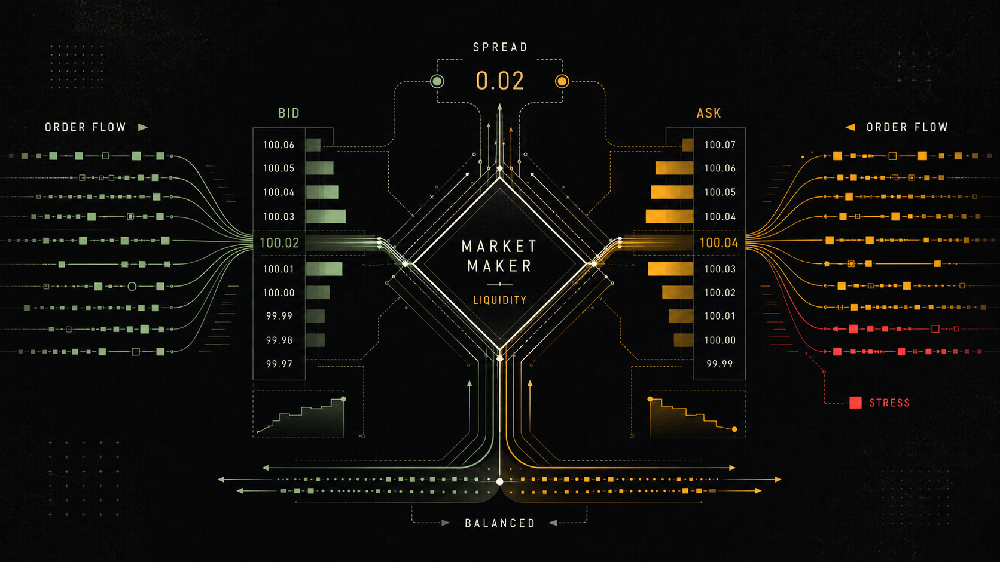
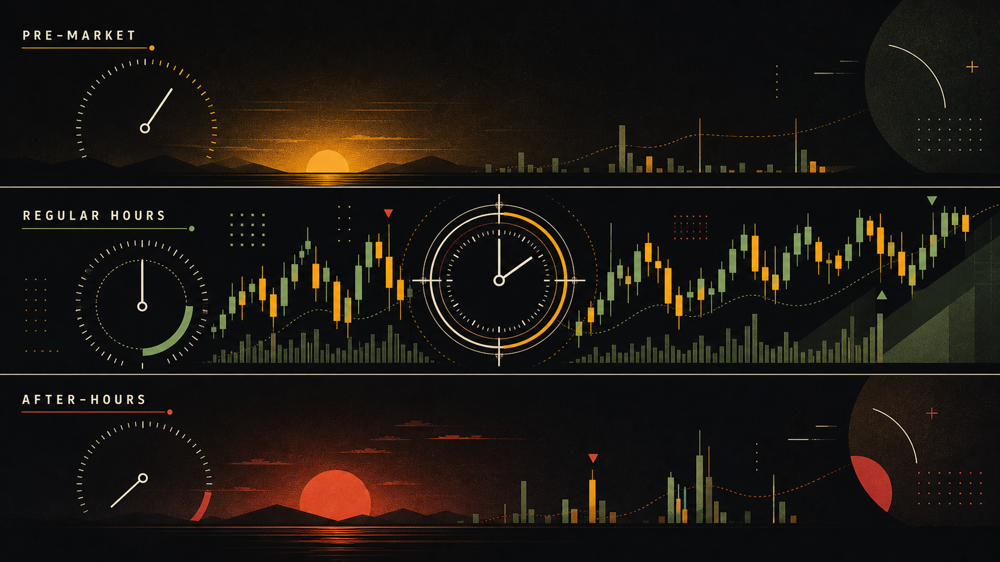

你可能听过「今天道指涨了 200 点」或「科技股集体崩盘」，但你有没有想过：这个「涨了」的意思，是所有股票都涨了吗？答案是：不一定。搞清楚指数背后的规则，才能真正读懂新闻里那些数字。
什么是股票指数（不是所有股票的平均）
全美上市股票有超过 8000 只。如果你想每天早上一眼看出「市场今天怎么了」，你不可能把 8000 只股票一一查看。于是，人们发明了股票指数（Stock Index）——从市场中挑选一批有代表性的股票，用一个数字来代表整体市场的涨跌。
关键点来了：指数不是所有股票的平均，而是一个经过精心设计的样本。选哪些股票、每只股票占多大权重——这两个问题的答案，决定了一个指数的「性格」。
最常见的加权方式有两种：市值加权（Market-cap weighted）和价格加权（Price-weighted）。市值加权意思是：公司越大，在指数里占的比重越高。价格加权则更奇怪——股票价格越高的公司占比越大，和公司实际大小完全无关。
为什么要区分这两种？因为你在新闻里看到的「道指涨了 300 点」和「S&P 500 涨了 0.8%」，背后驱动它们的公司可能完全不同。
四大指数详解
美股有四个你必须认识的指数。它们各有侧重，观察市场的角度完全不同：
关于道琼斯的「价格加权」，举个例子你就明白为什么这个设计很奇葩：假设 A 公司股价 $500，市值 $10 亿；B 公司股价 $50，市值 $1 万亿。在道指里，A 公司的权重是 B 公司的 10 倍——尽管 B 公司大 1000 倍。这个设计是 1896 年的历史遗留，当时没有计算机，用价格加权方便手算。如今没人会认为这是合理的，但道指太出名了，没人想改。
S&P 500 则不同。作为市值加权指数，苹果（市值约 $3 万亿）在指数里的权重，就是等比例大于一家市值 $100 亿的小公司。这更合理——但也带来一个问题：前 10 大成分股占了整个指数近 30% 的权重。当你买一个「S&P 500 指数基金」，你以为买了 500 家公司的均匀分散，实际上你的持仓有将近三成集中在苹果、微软、英伟达、亚马逊、谷歌这几家科技巨头身上。
市场交易所的结构：NYSE vs Nasdaq
美国有两个主要的股票交易所：纽约证券交易所（NYSE）和纳斯达克（Nasdaq）。很多人以为纳斯达克只交易科技股——这是个误解。两者最本质的区别在于交易机制，而不是上市公司的类型。
| 维度 | NYSE（纽交所） | Nasdaq（纳斯达克） |
|---|---|---|
| 成立年份 | 1792 年 | 1971 年 |
| 交易方式 | 有实体交易大厅（华尔街 11 号），指定做市商负责维护秩序 | 纯电子化撮合，无实体大厅，多个做市商竞争 |
| 上市标准 | 更严格：盈利要求高、最低市值 $4 亿、股东人数要求高 | 相对宽松，允许未盈利公司上市，吸引成长型科技公司 |
| 典型上市公司 | JP Morgan、可口可乐、伯克希尔、沃尔玛 | 苹果、微软、亚马逊、特斯拉、英伟达 |
| 交易量 | 按市值排全球第一 | 按交易股数排全球第一 |
有意思的是：苹果虽然是全球市值最大的公司，却在 Nasdaq 上市，而不是 NYSE——因为苹果 1980 年上市时选的是 Nasdaq，此后也没有迁移过。所以不要根据「在哪个交易所」来判断公司的质量或规模。
你可能注意到：NYSE 有个「实体交易大厅」，那些头戴耳机、手拿单据、在镜头前做手势的交易员形象，就是 NYSE 的招牌画面。但别被表象迷惑——NYSE 99% 以上的交易量也是电子化完成的，那个大厅主要是仪式感和媒体露出，真正的交易早就在数据中心里以微秒级速度完成了。
做市商：市场流动性的幕后功臣
不管是 NYSE 还是 Nasdaq，背后都有做市商（Market Maker）在默默维护市场的流动性。
想象你去一个外币兑换柜台，不管你什么时候去，柜台都会告诉你：「我这里美元兑人民币，买价 7.20，卖价 7.25。」你随时可以按这个价格买或卖，不需要等另一个客户刚好想和你做反向交易。这就是做市商的角色。
在股票市场里，做市商持续向市场挂出买价（Bid）和卖价（Ask），确保你任何时候想买卖股票都有对手方。他们的利润来源就是这个买卖价差（Spread）。做市商承担的风险是：如果价格剧烈波动，他们手里的库存（持仓）可能亏损。
正因为有做市商的存在，你才可以在开盘后几秒内买到任何一只大盘股，而不需要等待另一个散户刚好挂出卖单。这就是市场流动性（Liquidity）的来源。流动性越好的股票（成交量大、价差小），买卖越方便，冲击成本越低。

交易时段：盘前、正常交易和盘后
美股的交易时间按美国东部时间（ET）计算，分为三个时段。对于中国投资者，最重要的是换算成北京时间（夏令时 -12 小时，冬令时 -13 小时）：
| 时段 | 美东时间（ET） | 北京时间（夏令时） | 特点 |
|---|---|---|---|
| 盘前交易 Pre-market | 4:00 – 9:30 | 16:00 – 21:30 | 成交量极低，价差大，主要是机构和对冲基金在对财报和新闻作出反应 |
| 正常交易 Regular Hours | 9:30 – 16:00 | 21:30 – 04:00（次日） | 成交量最大，价差最小，流动性最好，是绝大多数散户操作的黄金时段 |
| 盘后交易 After-hours | 16:00 – 20:00 | 04:00 – 08:00（次日） | 成交量偏低，价格波动可以很大（尤其是财报发布后），价差大，滑点风险高 |
财报发布通常在盘前（开盘前）或盘后（收盘后）公布，目的是给市场时间消化信息。这也是为什么你会看到某只股票收盘价 $100，但第二天开盘直接跳到 $120 或 $80——这个「缺口」（Gap）就是盘后信息被重新定价的结果。

ETF：普通投资者最合适的工具
学完指数之后，你可能会想：「我认可 S&P 500 长期向上，那我能直接买 S&P 500 吗？」答案是：可以，通过 ETF（交易所交易基金）。
ETF 的工作原理很简单：基金公司买入 S&P 500 里所有 500 家公司的股票，然后把这个「一篮子股票」打包成一份新的证券，在交易所上市，让你像买普通股票一样买卖。你买一股 SPY（S&P 500 最大的 ETF），实际上就相当于按比例持有了苹果、微软、亚马逊等 500 家公司。
ETF 有一个参数叫费用率（Expense Ratio），是每年从你的资产中扣除的管理费。SPY 费率 0.09%，意味着你持有 $10000，每年只被收 $9 的管理费。主动型基金的平均费率是 1–2%，长期下来差距惊人。
超过 90% 的主动型基金，在 10 年内无法持续跑赢 S&P 500 指数。最聪明的投资，往往是最简单的投资。
— 来源：SPIVA 报告，标普道琼斯指数公司对于大多数普通投资者，定期买入 SPY 或 QQQ，然后长期持有，是最有据可查、最经得起时间检验的投资策略之一。你不需要挑股票，不需要预测市场，只需要让时间和复利做它们该做的事。
- 股票指数是精选样本+加权规则，不是所有股票的平均值。加权方式决定哪些公司对指数影响最大。
- S&P 500（500 只，市值加权）是最重要的市场基准；Nasdaq 科技浓度高；道琼斯只有 30 只且是价格加权（设计奇葩）；Russell 2000 反映中小企业和经济景气度。
- NYSE 有实体交易大厅和指定做市商；Nasdaq 是纯电子化交易。上市标准 NYSE 更严，但公司质量与交易所无必然关系。
- 做市商持续提供买卖报价，赚取买卖价差，是市场流动性的来源。
- 交易时间分三段：盘前（4:00–9:30）、正常（9:30–16:00）、盘后（16:00–20:00），均为美东时间。新手建议只在正常交易时段下单。
- ETF 是买入指数的最简单方式：SPY 追踪 S&P 500，QQQ 追踪 Nasdaq-100，IWM 追踪 Russell 2000。费率低、流动性好，是长期投资者的首选。
| 中文 | 英文 | 一句话解释 |
|---|---|---|
| 指数 | Index | 一篮子精选股票构成的市场晴雨表 |
| 市值加权 | Market-cap Weighted | 公司市值越大，在指数中占比越高 |
| 成分股 | Component Stocks | 构成某个指数的具体股票 |
| 做市商 | Market Maker | 持续提供买卖报价、维护市场流动性的机构 |
| ETF | Exchange-Traded Fund | 在交易所上市的指数基金，像股票一样交易 |
| 流动性 | Liquidity | 资产在不影响价格的情况下快速买卖的能力 |
| 盘前交易 | Pre-market Trading | 正常开市（9:30 ET）前的交易时段，流动性低 |
| 费用率 | Expense Ratio | ETF 每年收取的管理费，以资产百分比表示 |
S&P 500 包含多少只股票？
NYSE 与 Nasdaq 最大的区别是？
「做市商」的主要作用是什么？
道琼斯工业指数采用什么加权方式？为什么说这个设计「奇葩」？
美股正常交易时段（Regular Hours）是美东时间哪个时段？